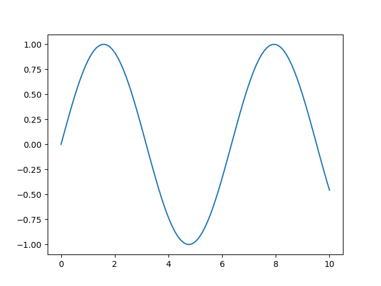
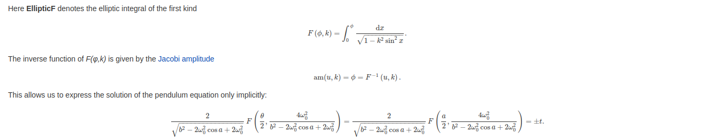
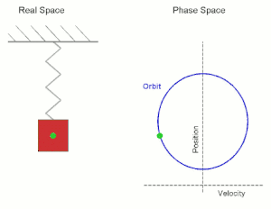

Primer Periodo
Table of Contents
Esta es la serie de notas de física realizadas para el primer periodo.
1. Movimiento armónico simple (M.A.S)
Es un movimiento periódico en el que un cuerpo oscila respecto a su posición de equilibrio a intérvalos iguales de tiempo.
- Manecillas del reloj - Péndulo simple - Movimiento de un cuerpo sujeto a un resorte. Estos ejemplos ignoran la fricción del aire, por eso se llaman modelos simples.
Todo M.A.S tiene una posición de equilibrio respecto a la cual el movimiento es simétrico.
1.1. Péndulo
1.1.1. Péndulo simple
Ejemplo de péndulo simple.
- ¿Es un movimiento armónico simple?
- ¿ Por qué es armónico o simple?
La ecuación del péndulo simple es después de la resolución de las ecuaciones:
\begin{equation} \theta (t) = sen\left( \sqrt{\frac{g}{l}} \cdot t \right) \end{equation}El periodo queda de la forma,
\begin{equation} \mathrm{T} = 2\pi \sqrt{\frac{l}{g}} \end{equation}Los siguientes son datos de ejemplo calculados a partir de la ecuación del periodo.
| L(m) | g(m/s²) | M(kg) | T(s) |
|---|---|---|---|
| 7 | 9.8 | 10 | 5.3102608 |
| 4 | 9.8 | 6 | 4.0141798 |
| 8 | 12 | 10 | 5.1301993 |
| 31 | 9.8 | 0 | 11.175004 |
| 8 | 9.8 | 0 | 5.6769076 |
| 6 | 9.8 | 0 | 4.9163462 |
| 12 | 9.8 | 0 | 6.9527634 |
| 50 | 9.8 | 0 | 14.192269 |
| 60 | 9.8 | 0 | 15.546852 |
| 5 | 9.8 | 0 | 4.4879895 |
| 9 | 9.8 | 0 | 6.0212698 |
python3 programas/pendulo_simple.py -dt 0.01 -l 9 -g 9.8 -o 7.14
El péndulo simple presenta un movimiento periódico y su periodo aumenta conforme aumenta su longitud, así como disminuye si la gravedad del sistema aumenta.
El periodo en el péndulo simple representa el tiempo en que el sistema tarda en realizar una oscilación completa.
La solución anteriormente vista es una aproximación para el caso en que el péndulo simple tiene valores de angulo inicial pequeños.
1.1.2. Gráfica del ángulo
import numpy as np from matplotlib import pyplot as plt t = np.linspace(0,10,100) y = np.sin(np.sqrt(9.8/10)*t) plt.plot(t,y) plt.savefig("./imagenes/angulo.png") return './imagenes/angulo.png'

Podemos ver que la gráfica es la gráfica de una función seno, ya que el angulo está descrita por esta función.
1.1.3. Simulador interactivo
Entren a esta página donde pueden jugar y practicar con el péndulo:
1.1.4. Solución exacta [OPCIONAL]
La solución exacta a la ecuación del péndulo la pueden encontrar en este link: Solución exacta
Les ahorro entrar a la página,

¿De verdad quieres saber? Entonces mira este video
1.1.5. Péndulo doble
python3 programas/pendulo_doble_2.py
Podemos notar que no todo péndulo genera un movimiento armónico simple.
1.2. Sistema masa resorte
- ¿Cual es el movimiento de un sistema masa resorte?
- ¿ Que diferencias tiene con un péndulo?
- Se parecen en que tiene oscilaciones
- ambos tienen un MAS.

Figure 1: Movimiento de una masa en un resorte
Utilizaremos un sistema sin fricción. Los sistema masa-resorte consisten en que un cuerpo de cierta masa está atado a uno de los extremos de un resorte y el cuerpo está sometido a alguna fuerza externa. Usualmente en sistemas simples, no se considera la fricción del aire ni la masa del resorte.
- Constante K
La constante K o constante del resorte. Se denomina la constante elástica del resorte, y relaciona la fuerza que ejerce un resorte con respecto a su distancia de elongación.
- Expresión de la Fuerza
\begin{equation} F = k \cdot x \end{equation}Donde k, es la constante de resorte y, x es la distancia de enlongación respecto al punto de equilibrio.
- expresión de la posición respecto al tiempo
\begin{equation} x(t) = Asin(w \cdot t + \phi ) \end{equation}Esta es la definición del movimiento del resorte con respecto al tiempo.
- A es la amplitud del movimiento y da razón de que tanto se elonga o comprime el resorte.
- w es llamada, frecuencia angular y determina el periodo del movimiento.
- \(\phi\) es llamada fase inicial, y define la posición inicial del movimiento.
1.3. Ejercicios
- Determina la ecuación representativa de un movimiento armónico simple sabiendo que la separación máxima a la posición de equilíbrio es de 20 cm y se han contado 25 oscilaciones en 5 segundos partiendo del equilibrio.
- Se cuelga un objeto de 200 g de un resorte sujeto al techo de 35 cm de longitud y su nueva longitud es de 45 cm.
- Determina la constante de elasticidad k del resorte
- Si estiramos el resorte hasta que mida 55 cm y lo soltamos, determina las fuerzas que actúan sobre el resorte.
- Determina cual debe ser la amplitud de las oscilaciones de un péndulo de 70 cm sabiendo que el máximo ángulo que separa el hilo de la vertical es de 6º. ¿Qué fuerzas actúan sobre el cuerpo en esa situación suponiendo una masa de 80 g?
- ¿Cual será la gravedad en un planeta en el que un péndulo de longitud 10 cm tarda 0.634 segundos en realizar una oscilación completa?
- Una partícula de m=200 g unida a un muelle horizontal, realiza un movimiento armónico simple siendo la frecuencia angular ω=100 rad/s. Sabemos que en el instante t=0, la posición inicial −0.5√3cm, y la velocidad inicial de la partícula es 50 cm/s.
- Escribir la ecuación del MAS
- Calcular la constante elástica del resorte.
1.4. Velocidad en el M.A.S
En la ecuación de movimiento del movimiento armónico simple, la fase se ve afectada por la posición inicial y la velocidad del sistema. Por ejemplo, en un resorte cuya velocidad inicial es cero la fase siempre será \(\phi /2\), si cambiamos la velocidad, entonces la fase deberá cambiar.
1.5. Taller repaso
Sabemos que un movimiento armónico simple es un movimiento que tiene un periódo y que luego de transcurrido ese periodo, el movimiento vuelve a tener las misas características físicas que al inicio. Ya hemos hecho varios ejemplos de movimiento periódico, pero pocos en los que no toque encontrar la posicion inicial.
Como se que algunos no tienen la ecuación escrita :(, aqui se las dejo.
Supón que tienes un péndulo que sueltas desde el reposo a un ángulo de \(\phi=4^{o}\). Además la longitud de su cuerda es de \(15cm\). Debes calcular \(\phi\), \(w\) como también deducir \(A\) para escribir la ecuación del movimiento. Recuerda que como en el péndulo el movimiento es angular, la ecuación queda de la siguiente forma:
\begin{equation} \label{eq:3} \theta(t) = A\cdot sin(w \cdot t+ \phi) \end{equation}Te ayudo empezando a hallar \(\phi\). Para ello, debemos primero saber que el pendulo se suelta en \(t=0\) porque sabemos que es justo el momento donde empieza el movimiento, remplazando queda como.
\begin{gather*} \theta (0) = A \cdot sin(\phi) \end{gather*}Porque \(w\cdot t\) se hace cero. Por otro lado, la amplitud (como estamos trabajando respecto al angulo) debe ser el angulo inicial del movimiento ya que no le estamos imprimiendo velocidad (desde el reposo). Sin embargo debemos pasar ese angulo (4o) a radianes, ya que nos lo dan en grados, para eso, usa la siguiente relación.
\begin{equation} \label{eq:5} 2\pi rad = 360^{o} \end{equation}Ese resultado en radianes queda siendo la amplitud, por lo que:
\begin{equation} \label{eq:6} A=Asin(\phi) \end{equation}¿Cuanto tiene que ser \(\phi\) para que se cumpla la igualdad.
La ecuación de velocidad de un M.A.S es.
\begin{equation} \label{eq:7} v(t) = A\cdot w cos(w \cdot t + \phi) \end{equation}
De los datos obtenidos en el punto anterior, ¿cómo quedaría la ecuación de la velocidad?.
Si puedes graficar ambas graficas, hazlo y comenta cuales son las principales diferencias entre ambas gráficas.
1.6. Ecuaciones del M.A.S
| Posición | \(x(t) = A \cdot sin(w\cdot t + \phi)\) |
| Velocidad | \(x(t) = A\cdot w\cdot cos(w\cdot t + \phi)\) |
| Aceleración | \(x(t) = -w^{2}\cdot A\cdot cos(w\cdot t + \phi)\) |
| Vmax | \(w\cdot\) A |
| Amax | \(w^{2} \cdot A\) |
2. Ondas
Formación de ondas, por ejemplo, agua, sonido, una cuerda.
2.1. Mecánicas
Son las que se propagan a traves de la materia, por medios elásticos, como por ejemplo el sonido y las ondas en los estanques de agua.
2.2. Electromagnéticas
Transportan energía atraves de campos electricos y magnéticos, y pueden hacerlo a traves del vacío. Por ejemplo, la luz.